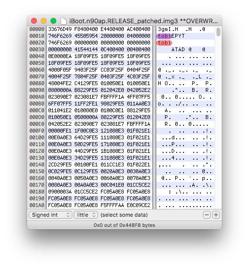

iOS bootchain basics
Complicated stuff, but essential to master in order to continue following this writeup.
Each iOS low-level firmware image is encapsulated into an img3 container which can mostly be in two states, encrypted or decrypted.
If we open an encrypted img3 container using an hex editor, we can notice that only the DATA tag data part is encrypted. Other tag data aren't encrypted because bootloaders needs to be able to read them before do the decryption.
We can also notice that encrypted img3 files have additional tags such as KBAG which holds the encrypted by GID img3 decryption key.
To implement an iOS dual-boot using the method from this guide, two tags are interesting for us. Those are the IMG3 header itself (purple) and TYPE (red).
They are probably the first to be took in consideration by the bootloader to meet the following conditions. Is the file really an img3 and which type is it (ibot, logo, dtre, recm, krnl).
If we open any iBoot img3 image, we can see that the IMG3 header as well as the TYPE tag contain both the data tobi (ibot in reverse order).
On the following screenshot of an iBoot img3 file, image type in the IMG3 header is highlighted in purple and img3 TYPE tag value is highlighted in red.

We know that when the iOS device boots, LLB looks in the nand_firmware for an img3 of TYPE ibot to find iboot and jump to it. If LLB can't find an iBoot type image, it goes into its failsafe mode known as "soft-DFU mode".
The LLB will mostly acts like iBSS, it will waits for a second stage bootloader to be sent over USB.
When iBoot is executed, it will first search on nand_firmware for the boot logo image logo then show it on the screen, after it will find and load devicetree image dtre, then finally it will mount the filesystem to find the kernelcache krnl image before execute it.
Since low-level exploits are pretty much valuables for security researchers and that the ones found on software bootloaders (iBSS/LLB, iBEC/iBoot) can be patched easily from an iOS update, we need something that can be used to run low-level code from an upper execution level on which there is more attack surface.
The best spot for such thing is iOS userland. It has a bigger attack surface than low-level components and burning an exploit on would only affects the current iOS version. Burning a low-level exploit would prevents the possibility of a userland jailbreak for many iOS versions.
Back in 2014, @Winocm released a set of tools called kexec-utils in which there's a program named kloader. Using these utilities in unison will let you do awesome things was in the readme file of these tools. This means that they are closely related to each other.
From a running iOS instance (userland), kloader places a custom low-level binary image into device memory and jumps to it. This will destroy the current running OS instance and jump back to the low-level environment. Since any code can be placed in device RAM, this means the custom image we load using kloader can have image validation disabled.
Using this tool, it's possible to "reboot" the iOS bootchain. The possibilities are pretty much like a low-level exploit, thought there is a big downside. The AES GID key is disabled during the whole kloader boot process (the GID key has been disabled during the signed boot sequence). This means the kloader boot process can't decrypt images.
There is an issue when a stock LLB image is used with kloader. Since LLB searches for an iBoot image in the nand_firmware partition, it will tries to execute the encrypted iBoot with img3 TYPE tag data ibot stored in. Since the GID isn't enabled while using kloader, LLB can't decrypt this iBoot image and it will try to run encrypted code. This will obviously makes LLB to hang.
The issue is mostly the same for iBoot (second stage bootloader), it won't be able to load encrypted devicetree, logos and execute kernelcache. The workaround for this issue is to flash decrypted images with different img3 TYPE tag data into nand_firmware. Then, patch kloader boot sequence bootloaders images to find decrypted images instead of stock ones.